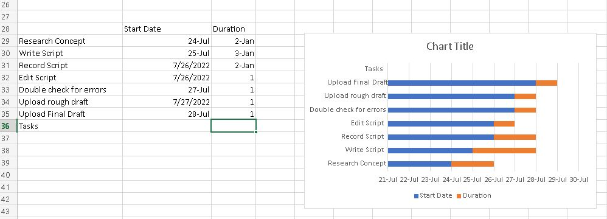

Project Managment
This weeks assignments covered everything to know about project management. Project management is simply put the management of projects. Projects have a unique goal to complete and after that objective is obtained the project is shut down. It's up to the person in charge of the project aka the project manager to make sure everything goes to plan. There are a few phases of project management those being, Initiation or starting the project, planning the project, monitoring the process, executing the project, and closing the project. This is called the project life cycle. Project management is important for a few reasons. First off, only one-fourth of all projects that get started get finished. Time management is often overlooked and causes projects to fail. Cost management sometimes cost is overlooked and causes the project to fail. It is the project manager's job to look at all these details and figure out a plan to make the project successful. Above is the Gantt Chart for my Final Project.